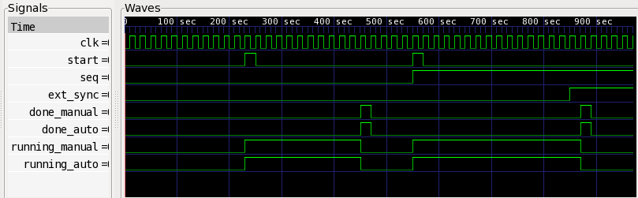

Suppose you need a state machine that issues a one-shot trigger that is a delayed version of a received one-shot trigger. Under one scenario you want to wait a fixed 10 clock cycles before issuing the one-shot trigger and under the scenario you wait for an external synchronization signal to go high.
If you were to write this as Verilog, it would look something like this:
module example1_manual
(
input clk,
input reset_n,
input ext_sync, // external sync
input seq, // controls which sequence is executed
input start, // starts the sequence
output reg running, // indicates sequence is running
output reg done // indicates sequence is done
);
reg [3:0] stall_count;
always @(posedge clk or negedge reset_n) begin
if(!reset_n) begin
running <= 0;
done <= 0;
stall_count <= 0;
end else begin
if(start) begin
running <= 1;
done <= 0;
end else if(done) begin
done <= 0;
end else if(running) begin
case(seq)
0: begin // in this state just stall 10 cycles
stall_count <= stall_count + 1;
if(stall_count >= 10) begin
running <= 0;
done <= 1;
end
end
1: begin // in that state wait for external sync
if(ext_sync) begin
running <= 0;
done <= 1;
end
end
endcase
end else begin
done <= 0;
end
end
end
endmodule
To generate the same exact behavior using seq, you would instead create a python source file as follows:
1 2 3 4 5 6 7 8 9 10 11 12 13 14 | import seq
from seq import Bin, Sequence
ext_sync = seq.Signal(name="ext_sync", width=1)
example1 = Bin.Bin(
name = "example1",
seqs = [
Sequence.Stall(count=10),
Sequence.Sync(sync=ext_sync),
]
)
example1.vlog_dump()
|
If you named this script example1.py, then from the command line you can run the following command to generate the verilog:
python example1.py
Upon completion, you will have an auto-generated verilog file called exmple1.v. If you take a peek at this file, it will not look anything like the manually coded one above. The exact look of the file, in fact, may change from version to version of seq as changes are made to add features or improve efficiency.
Wrapping the manually and automatically generated verilog modules up in a common testbench, we can see that they both behave the same. The screen dump below from gtkwave shows that indeed they do. The clk, start, seq, and ext_sync signals are fed to both modules identically. The done_manual and running_manual signals are generated by the manual implementation and the done_auto and running_auto are generated by the automatically generated code. This shows that they both behave identically.
Now let’s explain how the works line-by-line. In Lines 1-2, we import the python modules that we need. The Bin and Sequence modules contain implementation of many different classes that implement different types of Bins and Sequences.
On line 4 we create a seq.Signal with a name ext_sync and having a width of 1 bit. This signal will later be referenced when we create the Sync Sequence. The Bin and Sync Sequence will conspire together to figure out that this signal is not defined anywhere else and so it will make it an input. Thus, when the verilog is generated, there will be an input port called ext_sync that has a width of 1 and the user will need to wire up a driver to that input when instantiating this module.
On line 6 we start the instantiation of Bin. We use a Bin called Bin in the Bin module (Bin.Bin). As of the writing of this writing there is only one other type of Bin, and it is called a Bin.Len1Bin. That is a very specialized Bin that is optimized for speed when all Sequences are simple length 1. See the module documentation for more information on it. Otherwise, you will usually use the Bin.Bin class for building your Bins.
On line 7 we give the Bin a name of example1. This is the name of both the module and the file that gets generated. You can also use reference Bins by their name when embedding Bins in other Bins. For these reasons the name cannot be a verilog keyword and must obey verilog naming conventions (such as not containing spaces, non alpha-numeric charagers, etc.).
One line 8 we begin the definition of the member Sequences of this Bin. The member Sequencers are passed in as a list where the order corresponds to the sequence address as controlled via the seq input port that gets created.
On line 9 will implement Sequence with address 0x0. It is a Stall Sequence. We give this Sequence a hard-coded count argument of 10. This means that this Sequence will count to 10 whenever it is addressed and given the start signal. After counting to 10 it will drop its running signal and issue a one-shot done pulse. To make things more interesting, this Stall Sequencer could have also taken a Signal for the count argument to give it a parameterized stall point. For example:
Sequence.Stall(count=seq.Signal(name='my_stall_count', width=8))
In this example, the generated module would then have an input of width 8 bits called my_stall_count that would need driven. Thus we just created a Stall Sequence with a programmable stall count up to 256 counts.
On Line 10 we implement a Sync Sequence that takes on address 0x1. When the Sync Sequence executes, it will hold running high until the sync signal goes high. At that point it will drop running and issue an one-shot done pulse. The Sync Sequence takes additional optional arguments. One of the most useful is the active_high. When active_high is set to False, then the Sync module waits for the sync Signal to go low before returning. For example:
Sequence.Sync(sync=ext_sync, active_high=False)
Finally, on line 14, we call the member function vlog_dump() that actually generates the verilog that implements the desired specification.
The generated verilog has the following ports:
module example1(
input clk,
input reset_n,
input ext_sync,
input seq,
input start,
output running,
output done);
...
To use this code, you
From this small example we are beginning to see the power of the seq tool set in automatically generating verilog code from specification, but the real power will start to become apparent the later examples where we introduce registers and child Bins.